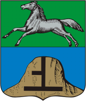
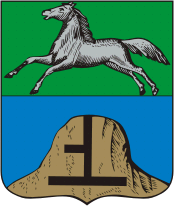

1.Музей Чуйского Тракта.
В России всего один музей, который посвящен дороге. Он рассказывает историю Чуйского тракта от тропы до автомагистрали через карты, воспоминания, картины и детали, близкие сердцам тех, кто имел отношение к формированию артерии Алтая.
По Чуйскому тракту путешествовали: геолог Владимир Обручев, актер Михаил Евдокимов, художник Николай Рерих, географы Григорий Потанин и Василий Сапожников, писатели Вячеслав Шишков и Василий Шукшин.
Здесь можно посмотреть коллекцию церковных календарей, открыток, фотографий, нательных крестов и прочих атрибутов. Также в экспозиции представлена раритетная икона Пресвятой Богородицы, уцелевшая во время пожара, и крест, разломанный ради транспортировки в металлолом одним из местных жителей.
В пестроте строений скрыто все разнообразие стилей архитектуры от ампира и модерна до «кружев» сибирского зодчества. В старом центре находятся особняки XIX века, особенностью которых является необычная кирпичная кладка и сохранившиеся металлические элементы декора. Здесь же стоит единственная уцелевшая часть Бийской крепости — гарнизонная гауптвахта 1797 года.
Практически на всех зданиях центра имеются башенки. Возможно, там сидели «наблюдатели», которые докладывали купцам о происходящем в городе. По другой версии, башенки составляли систему оповещения о пожарах и прочих чрезвычайных ситуациях.
Также под землей старого города создана целая система лабиринтов. По легенде, самые большие помещения находятся под Архиерейским подворьем. В советское время ходы пытались перекрыть, сюда даже были выделены рабочие, заливавшие их бетоном. Но насколько это увенчалось успехом неизвестно. Появление ходов связывают с сектантами, которые скрывались там от епископа Макария.
Успенский собор — третий по счету храм в Бийске с таким названием. Первый был снесен ввиду ветхости, а второй разобрали из-за вероятности обрушения. После чего было принято решение строить новое здание, но денег не хватало. Тогда глава города пожертвовал недостающую сумму, но возникла проблема с выбором места, и он распорядился заложить храм рядом с Казачьим собором по завещанию своей покойной супруги.
В годы правления большевиков храм пострадал, как и многие другие. Собор закрыли, а помещения использовали под склады. Спустя два года после Великой Отечественной войны началось его восстановление. Тогда это был единственный действующий в округе приход.
В годы правления большевиков храм пострадал, как и многие другие. Собор закрыли, а помещения использовали под склады. Спустя два года после Великой Отечественной войны началось его восстановление. Тогда это был единственный действующий в округе приход.
Церковь основали в честь Александра II в 1892 году, что делает ее одной из старейших построек Бийска. С этого момента и до начала XX века она являлась главной у алтайского духовенства. Через 18 лет здесь появилась колокольня. В 30-х годах в здании храма располагались конюшня, клуб, спортзал и складские помещения. Длительный период церковь называлась Казанской, по имени своей главной иконы. Свое современное наименование она получила при повторном крещении в 1990 году.
 
